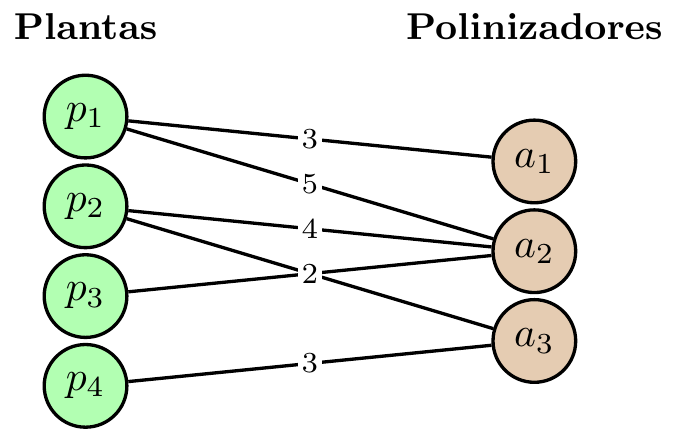

5 Más métricas globales de red: especialización y modularidad
5.1 ¿Qué mide la especialización?
La especialización indica qué tan selectiva es la red completa, y cuánto se aparta el uso observado del patrón esperable por los marginales.
5.2 Especialización de red \(H_2'\)
Observación: \(H_{2,\min}\) y \(H_{2,\max}\) no son valores libres, se construyen respetando los marginales observados. Por eso \(H_2'\) compara selectividad y no simplemente densidad o abundancia total.
Observación:
Las tres matrices siguientes tienen los mismos totales por renglón y columna: \((10,10)\).
Uso difuso \[ W_1= \begin{pmatrix} 5&5\\ 5&5 \end{pmatrix} \] \[ H_2'=0 \]
Uso parcialmente selectivo \[ W_2= \begin{pmatrix} 9&1\\ 1&9 \end{pmatrix} \] \[ H_2'\approx 0.53 \]
Uso perfectamente selectivo \[ W_3= \begin{pmatrix} 10&0\\ 0&10 \end{pmatrix} \] \[ H_2'=1 \]
Lo que cambia no es la disponibilidad total, sino cómo se reparte la actividad entre socios posibles. Ese es precisamente el rasgo que captura \(H_2'\).
5.3 Ejemplo: \(H_2'\) en la red planta–polinizador
Consideremos la versión ponderada de la red transversal planta-polinizador que usamos en la sección WNODF:
\[ W=\begin{array}{c|ccc|c} & a_1 & a_2 & a_3 & r_i\\ \hline p_1& 3 & 5 & 0 & 8\\ p_2& 0 & 4 & 2 & 6\\ p_3& 0 & 2 & 0 & 2\\ p_4& 0 & 0 & 3 & 3\\ \hline c_j& 3 & 11 & 5 & 19 \end{array} \]
con total \(m=19\) y \(p_{ij}=w_{ij}/m\).
Paso 1: Valor no corregido. \[ H_{2,\mathrm{uncorr}}=-\sum_{i,j} p_{ij}\ln p_{ij}\approx 1.7362. \]
Paso 2: Máximo y mínimo compatibles con los marginales. La matriz de referencia para \(H_{2,\max}\) reparte proporcionalmente a los marginales, \(E_{ij}=r_i\,c_j/m\), de donde \[ H_{2,\max}=-\sum_{i,j}\frac{r_i c_j}{m^2}\ln\frac{r_i c_j}{m^2}\approx 2.2158. \] Para \(H_{2,\min}\) se concentra al máximo la actividad respetando los marginales, lo que da \[ H_{2,\min}\approx 1.3989. \]
Paso 3: Estandarización. \[ H_2'=\frac{H_{2,\max}-H_{2,\mathrm{uncorr}}}{H_{2,\max}-H_{2,\min}} =\frac{2.2158-1.7362}{2.2158-1.3989}\approx 0.59. \]
5.4 En R con bipartite: Especialización
library(bipartite)
# Consideremos la red ponderada planta-polinizador del ejemplo anterior
Wt <- matrix(c(
3, 5, 0,
0, 4, 2,
0, 2, 0,
0, 0, 3
), nrow = 4, byrow = TRUE,
dimnames = list(c("p1","p2","p3","p4"), c("a1","a2","a3")))
# Obtener la lista H2, H2min, H2max y H2uncorr; la componente llamada H2 es precisamente el valor estandarizado $H_2'$.
H2fun(Wt) # la componente 'H2' es H2' ≈ 0.59 H2 H2min H2max H2uncorr
0.5545573 1.3990000 2.1560000 1.7360000 # O alternativamente, podemos obtener solo $H_2$
networklevel(Wt, index = "H2") H2
0.5545573 La componente H2 de H2fun es \(H_2'\approx 0.59\), que coincide con el ejemplo. A diferencia de \(H_{2,\mathrm{uncorr}}\) y \(H_{2,\mathrm{max}}\) que se calculan con una fórmula cerrada, \(H_{2,\min}\) se obtiene por un algoritmo de agregación, así que en redes grandes puede variar levemente entre corridas).
5.5 \(H2'\): limitaciones
- No es una medida de conectancia.
- En matrices binarias pierde su principal ventaja: la intensidad.
- Si los datos son continuos o tasas, conviene usar
H2fun(web, H2_integer=FALSE). - En redes muy pequeñas o triviales, el denominador puede colapsar y la métrica deja de ser informativa.